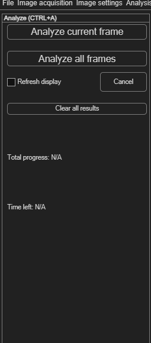
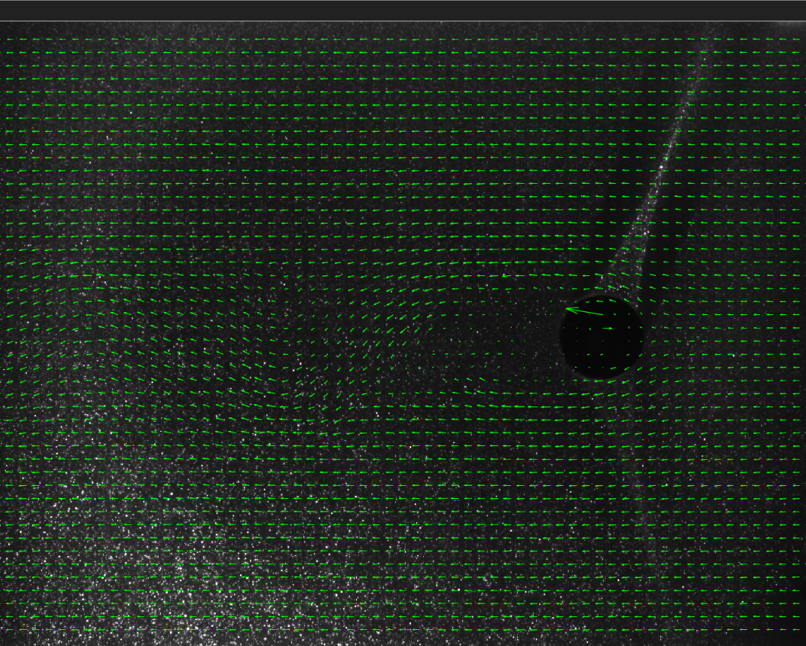

Running the analysis (ANALYZE!)
Once your images, masks, ROI and PIV settings are ready, this is where you actually run the cross-correlation and get vectors.
Opening the panel
Choose Analysis → ANALYZE! (Ctrl+A). The panel is deliberately simple: two buttons to start an analysis, a way to track and cancel progress, and a way to clear results.


Analyzing current frame vs. all frames
| Button | Effect |
|---|---|
| Analyze current frame | Runs the PIV analysis on just the frame you're currently viewing — the same quick test available directly from the PIV settings panel. |
| Analyze all frames | Runs the analysis across every loaded frame, one after another, using your current PIV settings. |
Tracking and cancelling progress
While an analysis runs, PIVlab shows Frame progress, Total progress and an estimated Time left. Click Cancel at any point to stop — frames already analysed keep their results.
Clearing results
Click Clear all results to discard the current analysis results and derived parameters and reset the progress display — useful before re-running with different settings. This only clears results; your images, masks, ROI and PIV settings are untouched.